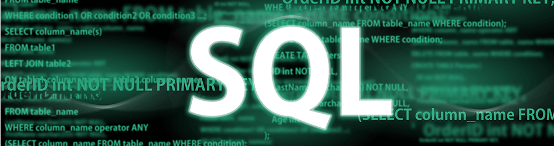

|Full Data Work Flow|
|SQL Data → SQL Queries → Javascript → Excel|

This project works across the data pipeline — from raw data to meaningful insights and presentation-ready visuals. It demonstrates a complete data analysis workflow using MySQL, JavaScript, and Excel. A mock sales database was created, sample transactional data was inserted, and SQL queries were written to analyze sales by region, product, and month. An interactive dashboard was built using Chart.js and JavaScript (not included in the repository due to browser-based limitations) to visualize regional, product, and monthly performance. A professional Excel report was also created, featuring pivot tables and a bar chart to summarize the data.
|Full Data Work Flow|
|SQL Data → SQL Queries → Javascript → Excel|
This project is a full-stack Widget Sales Dashboard that visualizes sales data by product, region, and month. The backend is built with Node.js and Express, connecting to a MySQL database to provide structured API endpoints for dynamic data retrieval. The frontend, built with HTML, CSS, and JavaScript using Chart.js, displays interactive bar charts and allows users to export the visualizations as CSV or PDF. This separation of concerns between frontend and backend improves scalability, maintainability, and modularity of the application.

Demonstrates the development of an end-to-end Extract, Transform, and Load (ETL) pipeline to process, clean, and analyze campaign and contact data from multiple sources. Using Python, SQL, and data visualization tools, this project integrates diverse datasets into a structured format suitable for analysis and reporting. This ETL pipeline showcases data engineering, SQL, and Python-based analysis while producing actionable insights from complex data structures.

Designed for a voting system, this SQL project organizes and secures data for voters, ballots, races, and candidates. It employs advanced triggers for automated audits, checks for overvotes, and strict user roles to uphold election integrity. The project showcases proficiency in relational database design, trigger programming, and enforcing business rules in SQL.

Developed a secure employee management database system to efficiently store and organize employee data. The project included creating a detailed schema with employee details and implementing role-based access control to ensure data security. I also designed a custom view to restrict sensitive information while providing department-specific access to relevant data. This project showcases my expertise in SQL, database design, and implementing security measures in business systems.